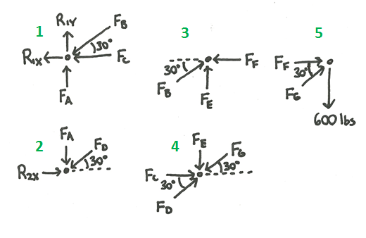
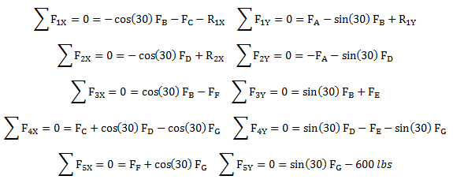
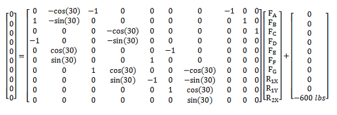
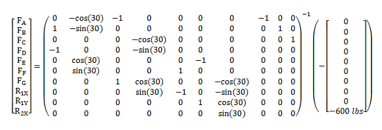
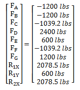

Method of Joints
The method of joints is a technique used to solve for the internal forces in a truss structure. As the name implies, the method of joints focuses on the joints where the members of the truss structures come together. This method can be used to solve for the internal forces in both plane and space trusses.
Method of Joints for Plane Trusses:
In a plane truss, think about the pins in the pin joints that connect all the members. We will calculate the equilibrium equations of each of these pins in order to calculate the forces on each of the members in the truss structure. The process below outlines the steps in the method of joints.
- Make sure that the structure is a statically determinate truss structure (as outlined on the truss page) and that all external forces act on the joints, not the middle of one of the members. If these assumptions are not met the method of joints will not produce valid results.
- Draw a free body diagram of each of the pins in the structure. Include the external load forces, the external reaction forces, and the forces that each member exerts on each pin. Remember that each member is a two force member so the members exert a force along the line between the two connection points on the member. You will also need to guess whether the member is in tension or compression. Members in compression will "push" on the pin like member A does in the diagram above while members in tension will "pull" on the pin like member B does in the diagram above. An incorrect guess will simply result in a negative answer later so it is not essential that the guess of tension or compression is correct. In fact, it is helpful to assume that all members are in compression, because this means all positive numbers for the calculated forces compression forces and all negative numbers for the calculated forces are tensile forces.
- Calculate the equations of equilibrium for each of the pins. For a plane truss you should have two equations for each pin. The sum of the forces horizontally will be zero and the sum of the forces vertically will be zero. All forces on the pin should act through the center of the pin, so there will be no moments acting on the pins.
- Count up the number of number of equations and the number of unknown variables. Each member should have one unknown force and there may also be unknown reaction forces. If the number of equations is greater than or equal to the number unknown variables continue to step 6. If not see step five to generate more equilibrium equations.
- (Optional) Treat the entire truss structure as a rigid body and draw its free body diagram. Include all the external forces (loads and reaction forces) that act on the truss structure, but do not include the internal forces in the members of the truss. You should be able to get three more equilibrium equations this way. The sum of the forces in the horizontal direction, the sum of the forces in the vertical direction, and the sum of the moments are all equal to zero.
- Once you have enough equations to solve for all of the unknowns, you can solve for the unknown forces in two ways. The first way is to go through the system of equations and solve for the variables one at a time using algebra. This works well when there are just a few equations, but this becomes more difficult with larger sets of equations. The second way is to convert the system of equations into its matrix form and to solve all for all the unknowns at once. This takes more time to set up, but saves time for larger systems of equations.
- After solving for the forces, remember to label them as either compressive or tensile forces. If the assumption you made earlier for each member force (tensile or compressive) was incorrect the answer you calculated with the system of equations will be negative.

Method of Joints for Space Trusses:
The method of joints follows the same procedure for space trusses as it does for plane trusses except for a few differences. The procedure is still focused on the joints, and a free body diagram should be drawn for each of the joints. There will be three equilibrium equations for each joint in a space truss though, where plane trusses only had two. In space trusses the sum of the forces in the X, Y, and Z directions will all be equal to zero for each joint. There will also be additional equilibrium equations if you need to analyze the entire structure as a rigid body to find the reaction forces. The entire truss structure will have six equilibrium equations. The sum of the forces in X, Y, and Z direction will all be equal to zero and the sum of the moments about the X, Y, and Z axes will all be equal to zero.
Worked Problems
Worked Problem 1:
Calculate the forces in each member of the loaded truss. Assume the members have negligible weights. The links have been labeled in blue and the joints have been labeled in green.
| Work | Comments |
|  |
First make sure the structure is a statically determinate truss structure and that all the loads are acting on joints. Since the problem setup meets these assumptions we can use the method of joints to solve for the internal forces. The first step is to create a free body diagram for each of the five joints in the truss structure. These five free body diagrams are shown to the left. It was assumed that all members were in compression for the free body diagrams so negative answers will indicate tensile forces in the members. |
|  |
Next we write out the equilibrium equations for the joints. Each joint has two equilibrium equations (sum of forces in the X direction and sum of forces in the Y direction) and there are five joints so we have ten equilibrium equations total. There also happen to be ten unknown forces (seven member forces and three external reaction forces) so we should be able to solve for all the unknown forces. |
|  |
A system of ten equations is too large to solve one variable at a time, so we will use matrix algebra to solve for all the unknown forces at once. To the left is the matrix form of the equilibrium equations we had in the previous step. |
|  |
We manipulate the matrix equation to solve for the vector of unknown forces. |
|  |
Finally, we use a computer program or a calculator to perform the matrix operation and get the following result. The first seven elements in the vector are the member forces and the last three are the external reaction forces. Remember that we assumed all member forces were compressive, so negative numbers for the forces represent tensile forces in the members. |
 |
| Author: Jacob Moore has liscenced this work under a Creative Commons Attribution-NonCommercial 3.0 Unported License. |